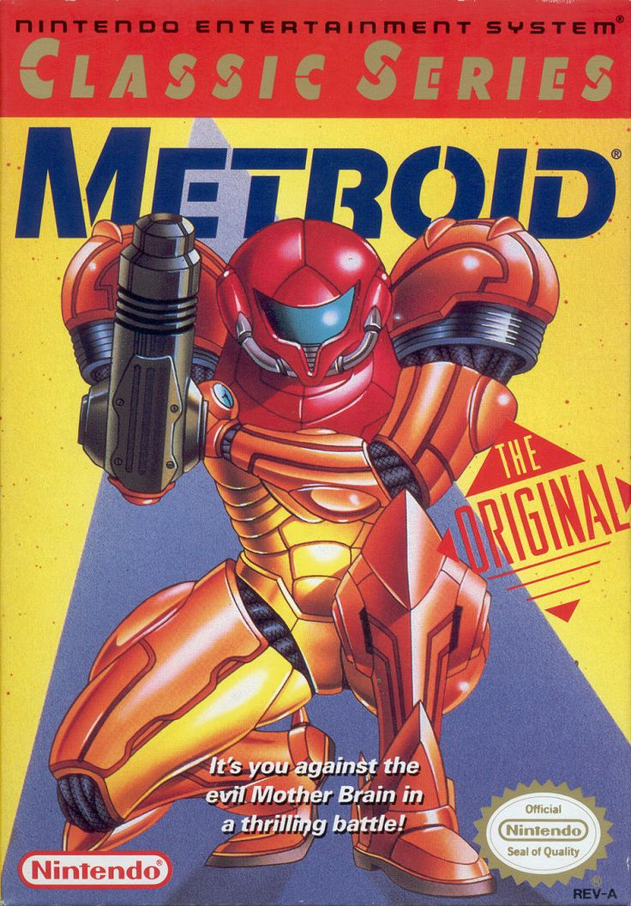

Metroid
Description
Dark, atmospheric, and ahead of its time, Metroid dropped players into the mysterious world of Planet Zebes in 1986. As the armored bounty hunter Samus Aran, players explored a sprawling, interconnected map filled with alien horrors and hidden upgrades. The game's sense of isolation and discovery laid the groundwork for the “Metroidvania” genre. With a surprise twist and a haunting soundtrack, Metroid is a true sci-fi classic that rewards exploration and mastery.
Did you know?
Samus being revealed as a woman at the end shocked players in the 80s.